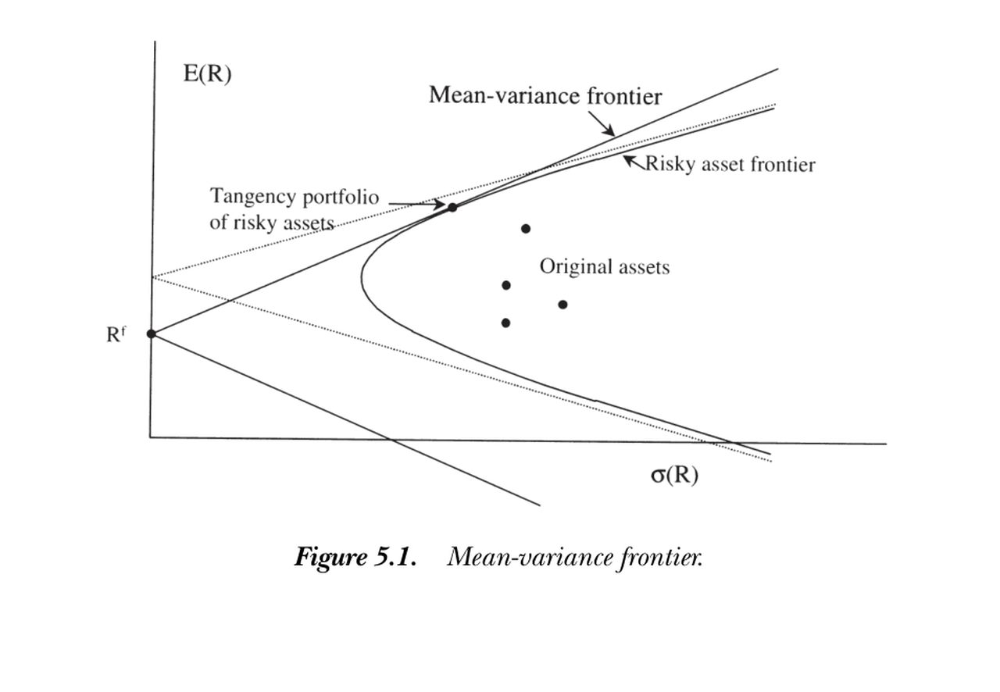
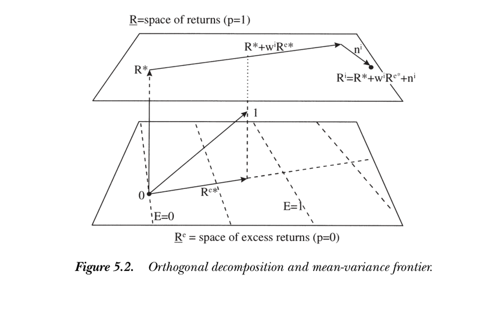
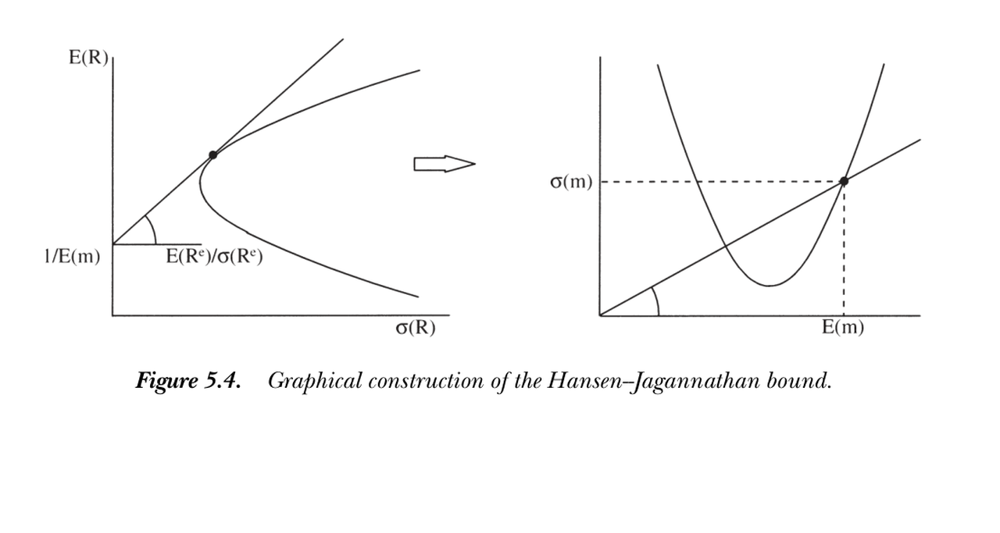

5. Mean-Variance Frontier and Beta Representations
5. Mean-Variance Frontier and Beta Representations
本章导读 大量实证资产定价用期望收益-贝塔表示与均值方差前沿写成。本章（Cochrane 第 5 章）介绍这两套语言并打通它们与贴现因子的关系。§5.1 期望收益-贝塔表示 \(E(R^i)=\gamma+\beta_{i}'\lambda\)，其本质是"时间序列回归的截距对所有资产相同"；§5.2 用经典 Lagrange 方法 刻画均值方差前沿；§5.3 给出 Hansen-Richard (1987) 的正交分解 \(R^i=R^*+w^iR^{e*}+n^i\)，前沿无需代数即可"浮现"；§5.4 前沿的张成；§5.5 汇编 \(R^*,R^{e*},x^*\) 的诸多性质；§5.6 Hansen-Jagannathan 界——贴现因子的均值方差前沿，把夏普比率读成对 \(\sigma(m)/E(m)\) 的约束。
5. Mean-Variance Frontier and Beta Representations
Overview Much empirical asset pricing is written in terms of expected return-beta representations and mean-variance frontiers. This chapter (Cochrane Ch 5) introduces both languages and connects them to the discount factor. §5.1 the expected return-beta representation \(E(R^i)=\gamma+\beta_{i}'\lambda\), which is really "the time-series regression intercept is the same for all assets"; §5.2 the classic Lagrangian characterization of the mean-variance frontier; §5.3 the orthogonal decomposition \(R^i=R^*+w^iR^{e*}+n^i\) of Hansen and Richard (1987), from which the frontier "pops out" with no algebra; §5.4 spanning the frontier; §5.5 a compilation of the properties of \(R^*,R^{e*},x^*\); §5.6 the Hansen-Jagannathan bounds — the mean-variance frontier of discount factors, reading the Sharpe ratio as a restriction on \(\sigma(m)/E(m)\).
5.1 期望收益-贝塔表示 / Expected Return-Beta Representations
线性因子定价模型常写成期望收益-贝塔形式：
5.1 Expected Return-Beta Representations
A linear factor pricing model is often written in expected return-beta form:
$$E(R^i)=\gamma+\beta_{i,a}\lambda_a+\beta_{i,b}\lambda_b+\cdots,\qquad i=1,2,\dots,N.\tag{5.1}$$
其中 \(\beta\) 是把收益对因子做时间序列回归的系数：
where the \(\beta\)'s are the coefficients in a time-series regression of returns on factors:
$$R^i_t=a_i+\beta_{i,a}f^a_t+\beta_{i,b}f^b_t+\cdots+\varepsilon^i_t,\qquad t=1,2,\dots,T.\tag{5.2}$$
要点：\(\beta_{i,a}\) 度量资产 \(i\) 对因子 \(a\) 的暴露，\(\lambda_a\) 是该风险暴露的价格。(5.1) 解释的是截面上平均收益的差异——把 \((E(R^i),\beta_i)\) 画出来应落在一条斜率 \(\lambda\)、截距 \(\gamma\) 的直线上。关键在于 \(\beta\) 是回归系数，不能是公司特征（规模、账面市值比、甚至股票代码首字母）：只有当收益取决于你"如何表现"（\(\beta\)）而非你"是谁"（特征），市场均衡才能抵御简单的重新打包。
(5.1) 与 (5.2) 形式相似，差别微妙却关键：时间序列回归 (5.2) 的截距 \(a_i\) 一般各资产不同，而贝塔定价 (5.1) 的截距 \(\gamma\) 对所有资产相同。因此贝塔定价是对截距的一个限制。估计 \((\gamma,\lambda)\) 的一种方法是跑平均收益对 \(\beta\) 的截面回归：
The key reading: \(\beta_{i,a}\) measures asset \(i\)'s exposure to factor \(a\), and \(\lambda_a\) is the price of that risk exposure. Equation (5.1) explains the variation in average returns across assets — plotting \((E(R^i),\beta_i)\) should line them up on a straight line with slope \(\lambda\) and intercept \(\gamma\). Crucially the \(\beta\)'s are regression coefficients and must not be firm characteristics (size, book-to-market, even the first letter of the ticker): only if returns depend on how you behave (\(\beta\)) rather than who you are (characteristics) can a market equilibrium survive simple repackaging schemes.
Equations (5.1) and (5.2) look alike, but the difference is subtle and crucial: the time-series regression (5.2) generally has a different intercept \(a_i\) for each asset, while the beta-pricing intercept \(\gamma\) is the same for all assets. So beta pricing is a restriction on those intercepts. One way to estimate \((\gamma,\lambda)\) is a cross-sectional regression of average returns on betas:
$$E(R^i)=\gamma+\beta_{i,a}\lambda_a+\beta_{i,b}\lambda_b+\cdots+\alpha_i,\qquad i=1,2,\dots,N.\tag{5.3}$$
\(\alpha_i\) 是定价误差，模型预测 \(\alpha_i=0\)。几个常见特例：若存在无风险利率，它对所有因子的 \(\beta\) 为零，故截距 \(\gamma=R^f\)；无无风险利率时 \(\gamma\) 称为零贝塔利率。常直接用超额收益，差分 (5.1) 消去截距得 \(E(R^{ei})=\beta_{i,a}\lambda_a+\cdots\)；当因子本身就是超额收益时，\(\lambda_a=E(f^a)\)，于是
The \(\alpha_i\) are pricing errors, and the model predicts \(\alpha_i=0\). Some common special cases: if a risk-free rate exists, its betas on all factors are zero, so the intercept \(\gamma=R^f\); with no risk-free rate, \(\gamma\) is the zero-beta rate. One often uses excess returns directly — differencing (5.1) removes the intercept, \(E(R^{ei})=\beta_{i,a}\lambda_a+\cdots\); and when the factors are themselves excess returns, \(\lambda_a=E(f^a)\), so
$$E(R^{ei})=\beta_{i,a}E(f^a)+\beta_{i,b}E(f^b)+\cdots,\qquad i=1,2,\dots,N.\tag{5.5}$$
此时无自由参数，时间序列回归的截距应全为零，连截面回归都不必做。
5.2 均值方差前沿：直觉与 Lagrange 刻画 / Mean-Variance Frontier: Intuition and Lagrangian Characterization
一组资产的均值方差前沿，是其所有组合的收益均值与方差所构成集合的边界，可由"给定均值、最小化方差"定义。下图是典型前沿：双曲线区域是所有风险资产的前沿；若有无风险利率，则前沿扩成更大的楔形区域（射线为切线，切点即切线组合）。
There are then no free parameters, the time-series intercepts should all be zero, and one can skip the cross-sectional regression entirely.
5.2 Mean-Variance Frontier: Intuition and Lagrangian Characterization
The mean-variance frontier of a set of assets is the boundary of the set of means and variances of all portfolios of those assets, defined by minimizing variance for a given mean. The figure below shows a typical frontier: the hyperbolic region is the frontier of all risky assets; if a risk-free rate exists, the frontier expands to the larger wedge (the rays are the lines through the risk-free rate, tangent to the risky frontier at the tangency portfolio).

图 5.1 均值方差前沿。双曲线为风险资产前沿；含无风险利率 \(R^f\) 时扩成楔形，两条射线在切线组合处与风险前沿相切。
Figure 5.1 Mean-variance frontier. The hyperbola is the risky-asset frontier; with a risk-free rate \(R^f\) it widens into the wedge, the two rays tangent to the risky frontier at the tangency portfolio.
前沿何时存在？ 只要剔除冗余证券、收益的方差-协方差矩阵 \(\Sigma\) 非奇异，前沿就存在。（两个完全相关却均值不同的收益会让人做空一买一空、无风险获无穷收益——这恰是违反一价定律。故一价定律既给出贴现因子，也给出前沿。）
Lagrange 解法。 设收益向量 \(R\)、均值 \(E\equiv E(R)\)、协方差 \(\Sigma=E[(R-E)(R-E)']\)，组合权重 \(w\)（\(w'1=1\)）。问题为
When does the frontier exist? As long as redundant securities are removed and the variance-covariance matrix \(\Sigma\) of returns is nonsingular. (Two perfectly correlated returns with different means would let you short one and buy the other for infinite riskless return — exactly a law-of-one-price violation. So the law of one price delivers both a discount factor and a frontier.)
Lagrangian solution. With return vector \(R\), means \(E\equiv E(R)\), covariance \(\Sigma=E[(R-E)(R-E)']\), and portfolio weights \(w\) (with \(w'1=1\)), the problem is
$$\min_{\{w\}}\ w'\Sigma w\quad\text{s.t.}\quad w'E=\mu,\ \ w'1=1.\tag{5.6}$$
定义 \(A=E'\Sigma^{-1}E\)，\(B=E'\Sigma^{-1}1\)，\(C=1'\Sigma^{-1}1\)，则给定均值 \(\mu\) 的最小方差为
Define \(A=E'\Sigma^{-1}E\), \(B=E'\Sigma^{-1}1\), \(C=1'\Sigma^{-1}1\). Then for a given mean \(\mu\) the minimum variance is
$$\operatorname{var}(R^p)=\frac{C\mu^2-2B\mu+A}{AC-B^2}.\tag{5.7}$$
方差是均值的二次函数——抛物线开根号就是双曲线，这正是均值-标准差空间里画双曲线的原因。最小方差组合在 \(\mu_{\min}=B/C\)，权重 \(w=\Sigma^{-1}1/(1'\Sigma^{-1}1)\)。前沿可由任意两个前沿收益张成：因权重 \(w\) 是 \(\mu\) 的线性函数，第三个组合 \(\mu_3=\lambda\mu_1+(1-\lambda)\mu_2\) 的权重就是 \(w_3=\lambda w_1+(1-\lambda)w_2\)。
5.3 均值方差前沿的正交刻画 / An Orthogonal Characterization
Lagrange 法直接但繁琐。Hansen and Richard (1987) 的几何方法更利落，且在无穷维支付空间（加入条件信息、动态交易或期权时）仍然成立。先定义两个特殊收益。\(R^*\) 是对应贴现因子 \(x^*\) 的收益：
Variance is a quadratic in the mean — the square root of a parabola is a hyperbola, which is why we draw hyperbolas in mean-standard deviation space. The minimum-variance portfolio sits at \(\mu_{\min}=B/C\), with weights \(w=\Sigma^{-1}1/(1'\Sigma^{-1}1)\). The frontier is spanned by any two frontier returns: since the weights \(w\) are linear in \(\mu\), a third portfolio with \(\mu_3=\lambda\mu_1+(1-\lambda)\mu_2\) has weights \(w_3=\lambda w_1+(1-\lambda)w_2\).
5.3 An Orthogonal Characterization of the Mean-Variance Frontier
The Lagrangian is straightforward but cumbersome. Hansen and Richard's (1987) geometric approach is cleaner and stays valid in infinite-dimensional payoff spaces (conditioning information, dynamic trading, options). Define two special returns. \(R^*\) is the return corresponding to the discount-factor payoff \(x^*\):
$$R^*\equiv\frac{x^*}{p(x^*)}=\frac{x^*}{E(x^{*2})}.\tag{5.9}$$
\(R^{e*}\) 是单位向量 1 在超额收益空间上的投影：
\(R^{e*}\) is the projection of the unit vector 1 onto the space of excess returns:
$$R^{e*}\equiv\operatorname{proj}(1\mid R^e),\qquad R^e\equiv\{x\in X:\ p(x)=0\}.\tag{5.10}$$
正如 \(x^*\) 用内积代表价格（\(p(x)=E(x^*x)\)），\(R^{e*}\) 用内积代表均值：\(E(R^e)=E(R^{e*}R^e)\) 对所有超额收益成立。由此得到一个漂亮的正交分解。
Just as \(x^*\) represents prices via an inner product (\(p(x)=E(x^*x)\)), \(R^{e*}\) represents means via an inner product: \(E(R^e)=E(R^{e*}R^e)\) for all excess returns. This yields a beautiful orthogonal decomposition.
正交分解与前沿 / Orthogonal decomposition and the frontier 每个收益都可分解为 \(R^i=R^*+w^iR^{e*}+n^i\)，其中 \(w^i\) 是常数、\(n^i\) 是超额收益且 \(E(n^i)=0\)，三者两两正交：\(E(R^*R^{e*})=E(R^*n^i)=E(R^{e*}n^i)=0\)。于是 \(R^{mv}\) 在均值方差前沿上 \(\iff R^{mv}=R^*+wR^{e*}\)（对某实数 \(w\)）。变动 \(w\) 即扫出整条前沿——这是前沿的"两基金定理"。Every return decomposes as \(R^i=R^*+w^iR^{e*}+n^i\), where \(w^i\) is a number, \(n^i\) is an excess return with \(E(n^i)=0\), and the three pieces are mutually orthogonal: \(E(R^*R^{e*})=E(R^*n^i)=E(R^{e*}n^i)=0\). Hence \(R^{mv}\) is on the mean-variance frontier \(\iff R^{mv}=R^*+wR^{e*}\) for some real \(w\). Varying \(w\) sweeps out the whole frontier — a "two-fund" theorem.
$$R^{mv}=R^*+wR^{e*}.\tag{5.11}$$
下图（状态空间）说明分解：\(R^*\) 垂直于收益平面（如 \(x^*\) 垂直于等价格平面）；\(R^{e*}\) 是超额收益空间内最接近 1 的向量，垂直于等均值平面；沿 \(R^{e*}\) 走 \(w^i\)、再沿正交的 \(n^i\) 走，即到达 \(R^i\)。因为向量长度就是二阶矩 \(E(R^2)=\sigma^2(R)+E(R)^2\)，给定均值时最短（\(n=0\)）的向量即落在 \(R^*+wR^{e*}\) 线上——这就是前沿。
The figure (in state space) shows the decomposition: \(R^*\) is perpendicular to the plane of returns (as \(x^*\) is perpendicular to constant-price planes); \(R^{e*}\) is the excess return closest to 1, perpendicular to constant-mean planes; step \(w^i\) along \(R^{e*}\), then an orthogonal amount \(n^i\), to reach \(R^i\). Since a vector's length is its second moment \(E(R^2)=\sigma^2(R)+E(R)^2\), the shortest vector (\(n=0\)) for a given mean lies on the line \(R^*+wR^{e*}\) — that is the frontier.

图 5.2 正交分解与均值方差前沿。收益平面（\(p=1\)）在上、超额收益平面（\(p=0\)）在下；\(R^i=R^*+w^iR^{e*}+n^i\) 三分量两两正交。
Figure 5.2 Orthogonal decomposition and mean-variance frontier. The plane of returns (\(p=1\)) is on top, the plane of excess returns (\(p=0\)) below; \(R^i=R^*+w^iR^{e*}+n^i\) with all three components orthogonal.
值得一记的反直觉之处：\(R^*\) 是最小二阶矩收益（图中离原点最近），它落在前沿的下半段（"无效"段），并非市场组合或财富组合。沿 \(R^{e*}\) 移动改变均值与方差；加 \(n\) 不改均值、只增方差，把资产推离前沿。
5.4 张成均值方差前沿 / Spanning the Mean-Variance Frontier
用 \(R^*,R^{e*}\) 刻画最自然，但前沿可由任意两个前沿组合张成。取 \(R^\alpha=R^*+\gamma R^{e*}\)（\(\gamma\ne0\)），则
A counterintuitive point worth noting: \(R^*\) is the minimum second-moment return (closest to the origin in the figure), and it sits on the lower ("inefficient") segment of the frontier — it is not the market or wealth portfolio. Moving along \(R^{e*}\) changes both mean and variance; adding \(n\) changes only variance, pushing an asset off the frontier.
5.4 Spanning the Mean-Variance Frontier
The \(R^*,R^{e*}\) characterization is most natural, but the frontier can be spanned by any two frontier portfolios. Take \(R^\alpha=R^*+\gamma R^{e*}\) (\(\gamma\ne0\)); then
$$R^*+wR^{e*}=(1-y)R^*+yR^\alpha,\qquad y=w/\gamma.\tag{5.13}$$
最常见的做法是用无风险利率（或某个"类无风险"的风险收益）替代 \(R^{e*}\)。有无风险利率时它在前沿上，表示为 \(R^f=R^*+R^fR^{e*}\)；无无风险利率时常用零贝塔收益、常数模仿组合 \(\hat R=\operatorname{proj}(1|X)/p[\operatorname{proj}(1|X)]\) 或最小方差收益作为替代。
5.5 \(R^*,R^{e*},x^*\) 的性质汇编 / A Compilation of Properties
这些特殊收益有诸多有用性质（很多要对照图才直观）。择要列出：
The most common alternative replaces \(R^{e*}\) with a risk-free rate (or a "risk-free-like" risky return). With a risk-free rate it lies on the frontier as \(R^f=R^*+R^fR^{e*}\); without one, common substitutes are a zero-beta return, the constant-mimicking portfolio \(\hat R=\operatorname{proj}(1|X)/p[\operatorname{proj}(1|X)]\), or the minimum-variance return.
5.5 A Compilation of Properties of \(R^*,R^{e*},x^*\)
These special returns have many useful properties (most are intuitive only with the pictures). The key ones:
$$E(R^{*2})=\frac{1}{E(x^{*2})},\qquad x^*=\frac{R^*}{E(R^{*2})}.\tag{5.14--5.15}$$
\(R^*\) 可像 \(x^*\) 一样代表价格：\(E(R^{*2})=E(R^*R)\) 对所有收益成立 (5.16)。\(R^{e*}\) 代表均值：\(E(R^e)=E(R^{e*}R^e)\) (5.17)。有无风险利率时
\(R^*\) represents prices just like \(x^*\): \(E(R^{*2})=E(R^*R)\) for all returns (5.16). \(R^{e*}\) represents means: \(E(R^e)=E(R^{e*}R^e)\) (5.17). With a risk-free rate,
$$R^f=\frac{1}{E(x^*)}=\frac{E(R^{*2})}{E(R^*)},\qquad R^{e*}=1-\frac{1}{R^f}R^*,\qquad R^f=R^*+R^fR^{e*}.\tag{5.18--5.20}$$
\(R^{e*}\) 还有"自身一二阶矩相等"的奇特性质：\(E(R^{e*})=E(R^{e*2})\)，故 \(\operatorname{var}(R^{e*})=E(R^{e*})[1-E(R^{e*})]\)。最后，可从基础资产显式构造：
\(R^{e*}\) also has the curious property that its first and second moments coincide: \(E(R^{e*})=E(R^{e*2})\), so \(\operatorname{var}(R^{e*})=E(R^{e*})[1-E(R^{e*})]\). Finally, both can be built explicitly from basis assets:
$$R^*=\frac{p'E(xx')^{-1}x}{p'E(xx')^{-1}p},\qquad R^{e*}=E(R^e)'E(R^eR^{e\prime})^{-1}R^e.$$
后者与 \(x^*=p'E(xx')^{-1}x\) 的构造如出一辙，只是把价格 \(p\) 换成均值 \(E\)——因为 \(R^{e*}\) 代表的是均值而非价格。
5.6 贴现因子的均值方差前沿：Hansen-Jagannathan 界 / The Hansen-Jagannathan Bounds
第 1 章已得到夏普比率与贴现因子波动率的关系：
The latter mirrors \(x^*=p'E(xx')^{-1}x\) exactly, with the mean \(E\) in place of the price \(p\) — because \(R^{e*}\) represents means rather than prices.
5.6 Mean-Variance Frontiers for Discount Factors: The Hansen-Jagannathan Bounds
Chapter 1 gave the relation between the Sharpe ratio and discount-factor volatility:
$$\frac{\sigma(m)}{E(m)}\ge\frac{|E(R^e)|}{\sigma(R^e)}.\tag{5.23}$$
推导一行即得：\(0=E(mR^e)=E(m)E(R^e)+\rho_{m,R^e}\sigma(m)\sigma(R^e)\)，再用 \(|\rho|\le1\)。Hansen and Jagannathan (1991) 的天才之处，是把它反过来读作对"能给定资产定价的贴现因子集合"的约束：要解释股票收益，需要均值近 1、波动很大的贴现因子——这是理解股权溢价之谜（第 21 章）的核心工具。对每个假设的无风险利率，最高夏普比率（切线组合）给出 \(\sigma(m)/E(m)\) 的下界，于是有一个优美的对偶：
The one-line derivation: \(0=E(mR^e)=E(m)E(R^e)+\rho_{m,R^e}\sigma(m)\sigma(R^e)\), with \(|\rho|\le1\). Hansen and Jagannathan's (1991) brilliant move was to read it the other way — as a restriction on the set of discount factors that can price given assets: to explain stock returns we need discount factors with mean near 1 and very high volatility — the central tool for the equity premium puzzle (Ch 21). For each hypothetical risk-free rate, the highest Sharpe ratio (the tangency portfolio) gives a lower bound on \(\sigma(m)/E(m)\), yielding a beautiful duality:
$$\min_{\{m:\,p=E(mx)\}}\frac{\sigma(m)}{E(m)}=\max_{\{R^e\in X\}}\frac{E(R^e)}{\sigma(R^e)}.\tag{5.24}$$

图 5.4 Hansen-Jagannathan 界的图解。左：收益的均值方差前沿，切线斜率即 \(\sigma(m)/E(m)\) 之逆向约束；右：贴现因子落在 \(\{E(m),\sigma(m)\}\) 空间的双曲区域内。
Figure 5.4 Graphical construction of the Hansen-Jagannathan bound. Left: the return mean-variance frontier, whose tangent slope governs \(\sigma(m)/E(m)\); right: discount factors lie in a hyperbolic region of \(\{E(m),\sigma(m)\}\) space.
要显式计算，仿照 (4.2) 把任意贴现因子写成对支付空间的回归加误差：
For an explicit calculation, following the logic of (4.2), write any discount factor as a regression on the payoff space plus an error:
$$m=E(m)+[p-E(m)E(x)]'\Sigma^{-1}[x-E(x)]+\varepsilon,\qquad \Sigma\equiv\operatorname{cov}(x,x'),\ E(\varepsilon)=E(\varepsilon x)=0.\tag{5.25}$$
由 \(\sigma^2(\varepsilon)\ge0\) 立刻得到 Hansen-Jagannathan 界的显式形式：
Since \(\sigma^2(\varepsilon)\ge0\), this immediately gives the explicit Hansen-Jagannathan bound:
$$\sigma^2(m)\ge[p-E(m)E(x)]'\Sigma^{-1}[p-E(m)E(x)].\tag{5.26}$$
与收益侧完全对偶：贴现因子也有三分解 \(m=x^*+we^*+n\)，其中 \(e^*\equiv1-\operatorname{proj}(1|X)=\operatorname{proj}(1|E)\)（\(E=\{m-x^*\}\)）代表 \(m\) 的均值（恰如 \(R^{e*}\) 之于收益），\(n\) 均值为零。前沿上的贴现因子为
This is perfectly dual to the return side: discount factors also decompose three ways, \(m=x^*+we^*+n\), where \(e^*\equiv1-\operatorname{proj}(1|X)=\operatorname{proj}(1|E)\) (with \(E=\{m-x^*\}\)) represents the mean of \(m\) (just as \(R^{e*}\) does for returns), and \(n\) has mean zero. The frontier discount factors are
$$m^*=w+[p-wE(x)]'E(xx')^{-1}x.\tag{5.28}$$
变动 \(w\) 即扫出 \(\{E(m),\sigma(m)\}\) 空间中的双曲前沿。HJ 界等价于均值方差前沿：加资产抬升 HJ 界 = 加资产扩张前沿。HJ 还能更进一步——加上正性约束 \(m>0\) 求 \(\min\sigma^2(m)\) 得"带正性的 HJ 界"（在股票中提升不大，但在期权应用里至关重要，见第 18 章）。
小结 / Summary
本章把三套等价语言摆在一起：贝塔表示（截距对所有资产相同）、收益的均值方差前沿（\(R^*+wR^{e*}\)）、贴现因子的均值方差前沿（\(x^*+we^*\)，即 HJ 界）。Hansen-Richard 的正交几何把它们统一在同一张状态空间图里，\(R^*\leftrightarrow x^*\)、\(R^{e*}\leftrightarrow e^*\) 一一对应。HJ 界是后续股权溢价之谜与因子模型检验的核心工具。
Varying \(w\) sweeps out the hyperbolic frontier in \(\{E(m),\sigma(m)\}\) space. The HJ bound is equivalent to the mean-variance frontier: adding assets to raise the HJ bound = adding assets to expand the frontier. HJ goes one step further — adding positivity \(m>0\) to \(\min\sigma^2(m)\) gives the "HJ bound with positivity" (not very informative for stocks, but crucial for options, Ch 18).
Summary
This chapter lines up three equivalent languages: the beta representation (same intercept for all assets), the return mean-variance frontier (\(R^*+wR^{e*}\)), and the discount-factor mean-variance frontier (\(x^*+we^*\), the HJ bound). Hansen-Richard's orthogonal geometry unifies them in one state-space picture, with \(R^*\leftrightarrow x^*\) and \(R^{e*}\leftrightarrow e^*\) in one-to-one correspondence. The HJ bound is the central tool for the equity premium puzzle and factor-model tests to come.
习题 / Problems
- 均值-标准差几何。 证明 \(R^{e*}\) 在 \(R^e\) 中垂直于等均值平面（图 5.2）。
- \(x^*\) 在收益平面上方还是下方？ 分别考虑：(a) 无风险经济；(b) 风险中性经济；(c) 市场夏普比率约 0.5、\(R^f=0.01\) 的真实经济。（提示：看 \(p(x^*)\) 大于还是小于 1。）
- 无风险利率下的 \(R^{e*}\)。 证明若单位支付在支付空间内，则 \(R^{e*}=(R^f-R^*)/R^f\)。
- 风险中性极限。 投资者风险中性时，\(R^*,R^{e*}\) 与均值方差前沿会怎样？分有/无无风险利率两种情形。
- 对偶的紧性。 证明 (5.24)：先做有无风险利率的情形，找到使不等式取等的收益与 \(m\)，再做无无风险利率的情形。
Problems
- Mean-standard-deviation geometry. Prove that \(R^{e*}\) lies at right angles to planes of constant mean return in \(R^e\) (Figure 5.2).
- Is \(x^*\) above, below, or on the plane of returns? Consider (a) a risk-free economy; (b) a risky but risk-neutral economy; (c) our economy with market Sharpe ratio \(\approx0.5\) and \(R^f=0.01\). (Hint: check whether \(p(x^*)\) is greater or less than 1.)
- \(R^{e*}\) with a risk-free rate. Show that if the unit payoff is in the payoff space \(X\), then \(R^{e*}=(R^f-R^*)/R^f\).
- Risk-neutral limit. What happens to \(R^*,R^{e*}\), and the mean-variance frontier if investors are risk neutral? Do the cases with and without a risk-free rate.
- Tightness of the duality. Prove (5.24): find returns and an \(m\) for which the inequality is tight, doing the risk-free-rate case first, then the no-risk-free-rate case.